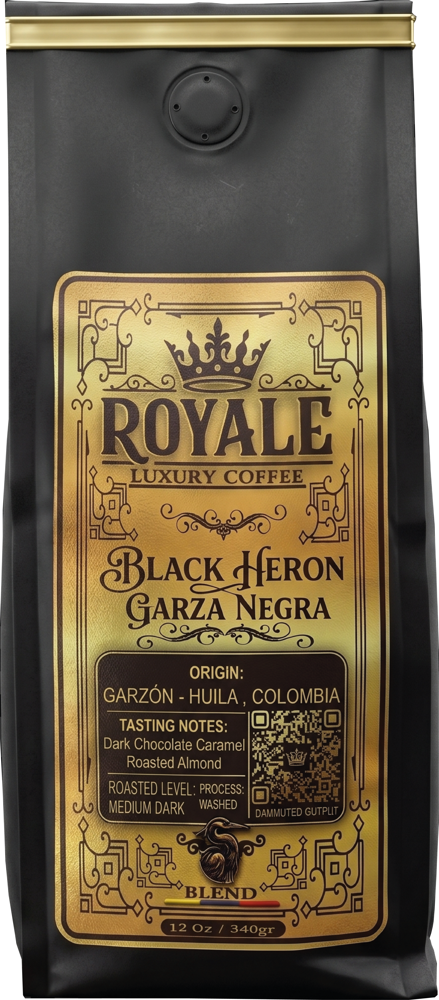

Coffee is not a product.
It's culture.
Estate microlots. Garzón, Huila.
High-scoring coffee, grown with intent.

Huila no es origen.
Es estándar.
En las montañas del Huila, el café no es industria apresurada. Es práctica lenta, consciente y obsesiva. Cada microlote es una decisión.

En las altas mesetas del Huila, el café no se cosecha.
Se selecciona. Cada
cereza, en su momento exacto de madurez.
Proceso Washed. Tueste Medium Dark. Notas de Chocolate Oscuro, Caramelo & Almendra Tostada.
Origen
Garzón, Huila es una región donde el café se cultiva con altitud, tiempo y criterio. Cada microlote responde a decisiones humanas, no industriales.